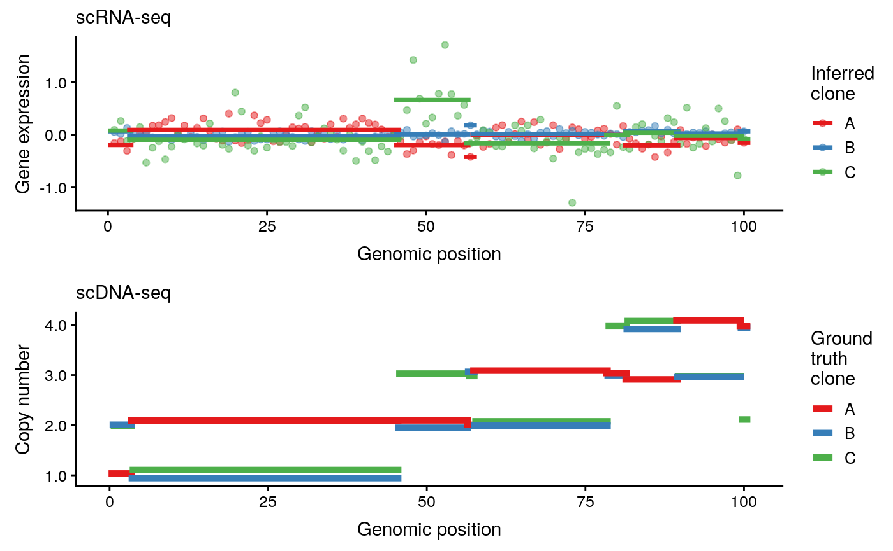

plot_clonealign.RdPlot gene expression and copy number as a function of genomic coordinate.
plot_clonealign(sce, clones, cnv_data, chromosome = "1", chr_str = "chr", start_str = "start_position", end_str = "end_position", jitter_cnv = TRUE, ggplot_palette = "Set1")
| sce | A |
|---|---|
| clones | The clone assignments of each cell - must be of the same set as the colnames of |
| cnv_data | The gene by clone copy number matrix used as input to |
| chromosome | The chromosome to plot |
| chr_str | The column of |
| start_str | The column of |
| end_str | The column of |
| jitter_cnv | Logical - if true random noise is added to the copy number profiles to help display all clones in case two lie on top of each other |
| ggplot_palette | The palette to be passed to |
A ggplot2 object displaying a CNV and gene expression track for each (inferred) clone
This function requires the chromosome, start, and end positions of each features to plot.
These are encoded as the chr_str, start_str, and end_str features
in rowData(sce) respectively. If we have ensembl ids or similar we can get add the
required fields using the getBMFeatureAnnos function in the scater package -
sce <- getBMFeatureAnnos(sce, filters = "ensembl_gene_id",
attributes = c("chromosome_name", "start_position", "end_position"),
feature_symbol = "hgnc_symbol",
feature_id = "ensembl_gene_id",
dataset = "hsapiens_gene_ensembl")
Then we would call plot_clonealign using chr_str == "chromosome_name", start_str == "start_position",
and end_str == "end_position".
library(SingleCellExperiment) library(scater) library(dplyr) data(example_clonealign_fit) cnv_data <- rowData(example_sce)[,c("A", "B", "C")] gene_position <- as_data_frame(cnv_data) %>% mutate(gene = seq_len(nrow(cnv_data))) %>% arrange(A, B, C) %>% mutate(position = seq_len(nrow(cnv_data))) %>% arrange(gene) %>% .$position#> Warning: Arguments in '...' ignoredrowData(example_sce)$chromosome <- "1" rowData(example_sce)$start_pos <- gene_position rowData(example_sce)$end_pos <- gene_position example_sce <- normalise(example_sce)#> Warning: using library sizes as size factorsplot_clonealign(example_sce, example_clonealign_fit$clone, cnv_data, chromosome = "1", chr_str = "chromosome", start_str = "start_pos", end_str = "end_pos")#>#>#>